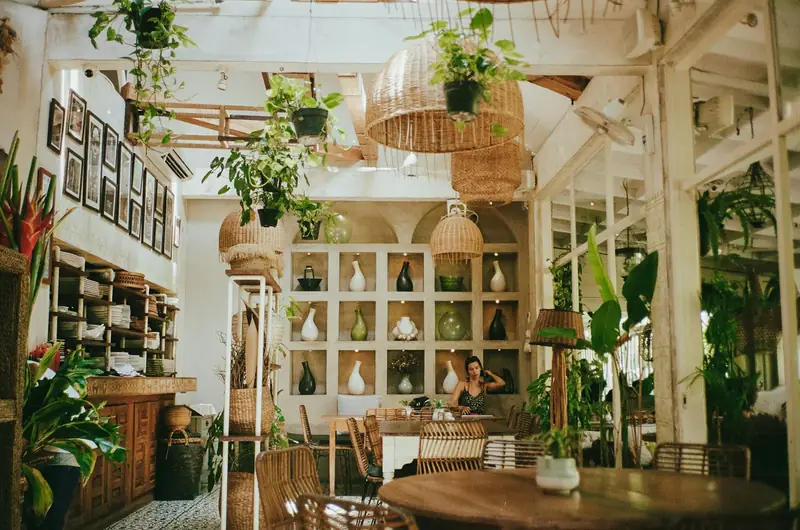
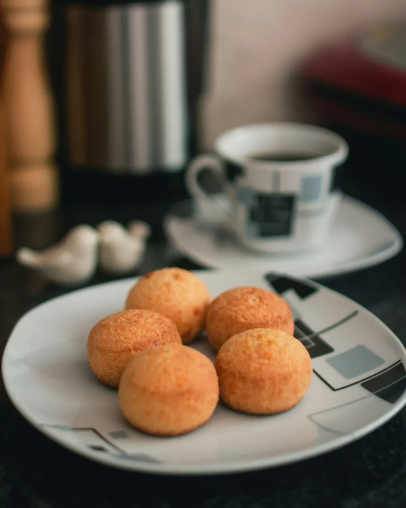
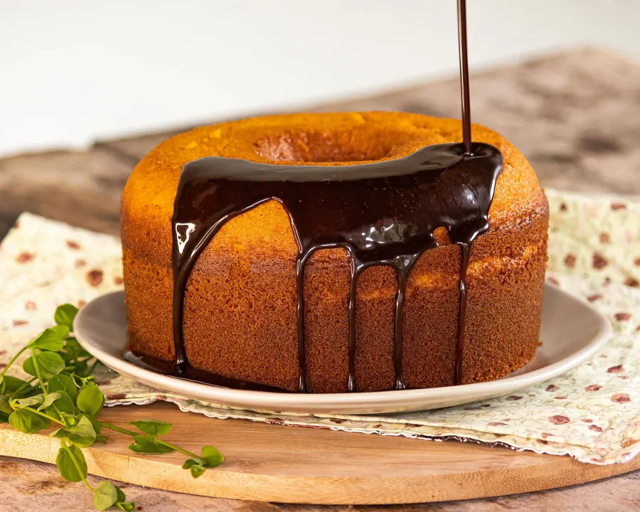
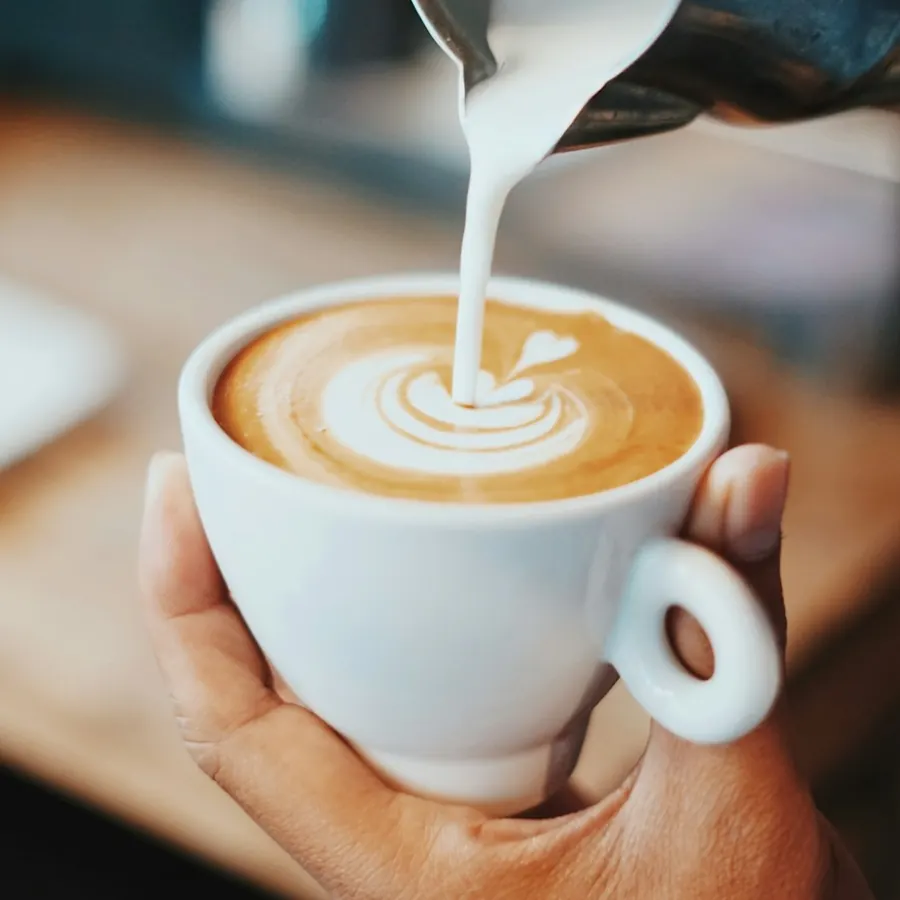
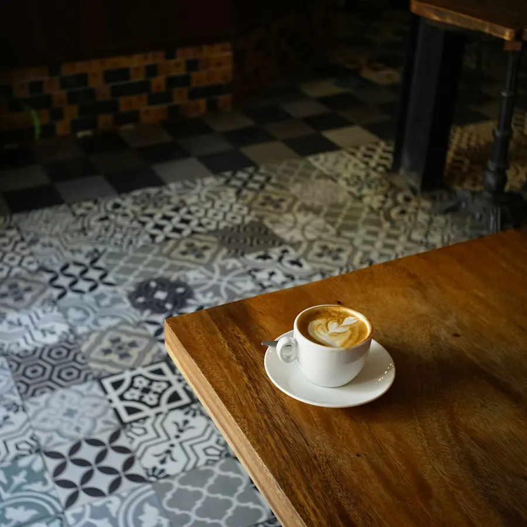
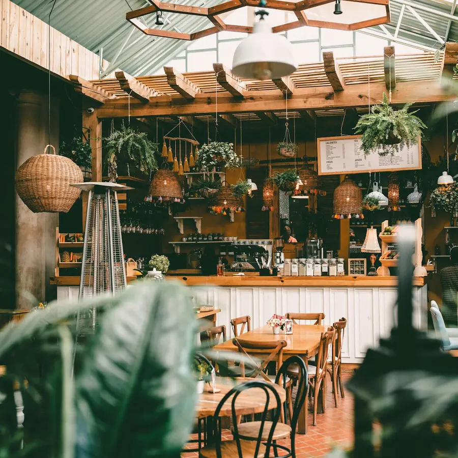

Seg a sex, 7h30 às 19h · Fim de semana a partir das 8h
Café passado na hora, pão de queijo saindo do forno e a Lagoa logo ali.
Desde 2014 na Avenida das Rendeiras. Mesa na janela, grão torrado aqui na Ilha e bolo do dia feito de madrugada.
Cardápio
O que sai do balcão
Café especial de produtores do Sul de Minas, leite da Serra Catarinense e tudo da cozinha feito aqui, todo dia.

Cafés
- EspressoR$ 7,00
- Café coado no V60R$ 12,00Grão da semana, passado na sua frente.
- CappuccinoR$ 13,00
- LatteR$ 14,00Troque por leite de aveia sem custo.
- Mocha com cacau 70%R$ 16,00
- Café gelado com tônicaR$ 17,00O preferido depois da praia.
Da cozinha
- Pão de queijoR$ 6,00Porção com 6: R$ 30,00.
- Pão na chapaR$ 9,00
- Tapioca de queijo coalhoR$ 19,00
- Misto quente no pão de fermentação naturalR$ 22,00
- Torrada com ovos mexidos e tomateR$ 28,00
Doces
- Fatia de bolo de cenoura com chocolateR$ 12,00
- Cuca de bananaR$ 12,00Receita da vó, com farofa de canela.
- Brownie com castanhaR$ 13,00
Manhã na Lagoa
Café coado, 2 pães de queijo e uma fatia do bolo do dia. Até as 11h.
R$ 32,00

Encomendas
Leva para casa, para o escritório ou para a festa
- Bolo de cenoura inteiro (22 cm)R$ 85,00Cobertura de chocolate meio amargo, serve 12 fatias.
- Cento de pão de queijo congeladoR$ 75,00Tamanho coquetel, pronto para assar.
- Cesta de café da manhã para 2R$ 140,00Café coado na garrafa, pães, frutas, bolo e geleia da casa.
Pedidos com 24 horas de antecedência. Retirada no balcão ou entrega na Lagoa e no Rio Vermelho.
Horários
A porta abre cedo
| Segunda a sexta | 7h30 às 19h |
|---|---|
| Sábado | 8h às 20h |
| Domingo e feriados | 8h às 14h |
No verão, de dezembro a março, ficamos abertos até as 21h todos os dias.
Wi-Fi liberado, tomada em quase toda mesa e cachorro bem-vindo na varanda.
No Instagram
O bolo do dia sai lá primeiro
@caferendeira

O cappuccino da manhã. 
A mesa do canto, a mais disputada. 
Sábado de sol, casa cheia. Fornada das 7h30.
Como chegar
Na Avenida das Rendeiras, de frente para a Lagoa
Lagoa da Conceição, Florianópolis. A 5 minutos do Centrinho, com vaga na rua e bicicletário na porta.